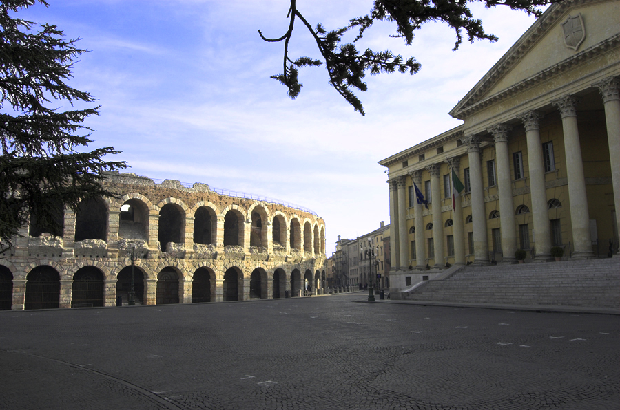
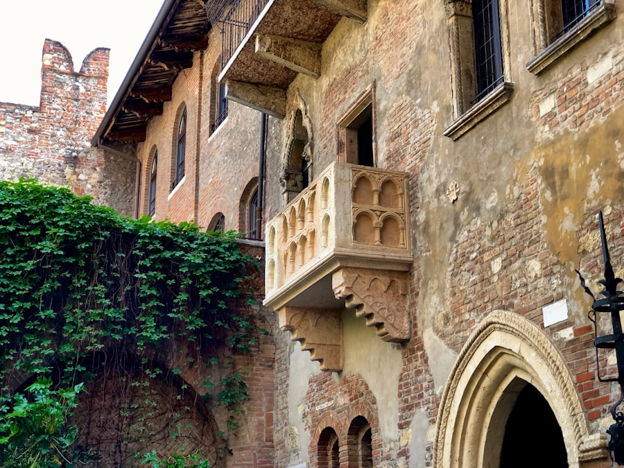
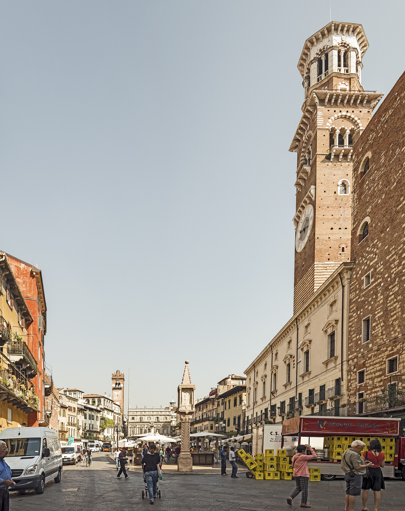
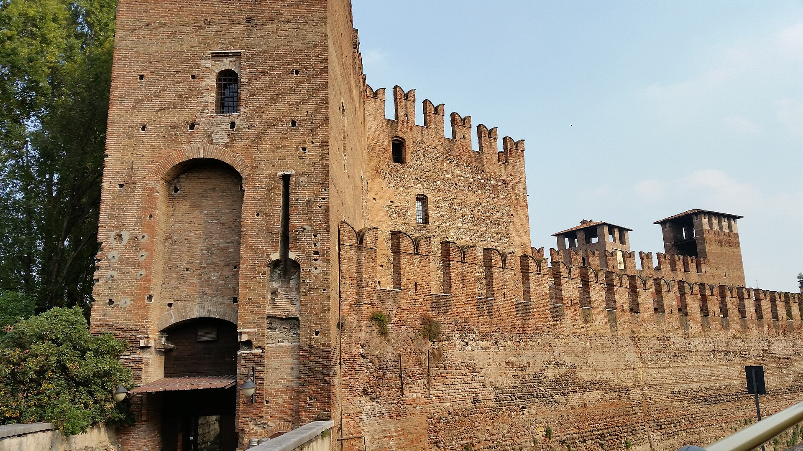
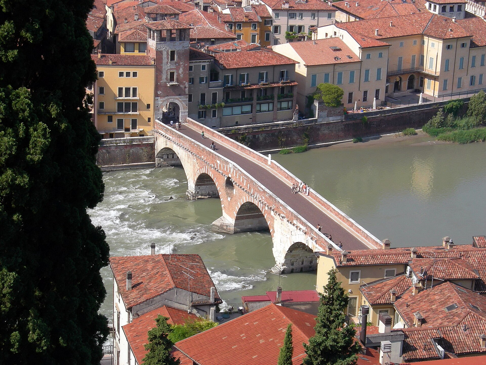

Verona
维罗纳
罗密欧与朱丽叶的故乡 · 一座仍在使用罗马竞技场的城市
维内托大区第二大城市，阿迪杰河穿城而过。公元前 89 年成为罗马殖民地，城内至今叠着完整的罗马层：竞技场、剧场、石桥与城门。12-14 世纪的斯卡利杰罗家族统治给它留下哥特的红砖印记，2000 年整座老城列入世界遗产。
莎士比亚把《罗密欧与朱丽叶》放在这里，虽然他从未到访--维罗纳因此成了全世界的"爱情首都"。两千年层叠的城市里，虚构与真实和平共处：朱丽叶的阳台是真的中世纪石雕，而罗密欧从未存在。
大区威尼托 Veneto
人口约 26 万
10 月气温11-19°C
机场VRN Villafranca（12km）
火车站Verona Porta Nuova
世界遗产2000 年（老城）
城市速览
- 老城步行可达：竞技场到朱丽叶之家 8 分钟
- Verona Card（€25/24h）含多数场馆
- 必吃 Risotto all'Amarone（葡萄酒烩饭）
- Valpolicella 葡萄酒产区在城郊 20 分钟
顺路推荐
- 加尔达湖与西尔米奥（火车 20 分钟 + 接驳）
- 朱丽叶之墓（Sant'Alessio 附近的地下室）
- Giusti 花园：文艺复兴园林的隐藏宝石
- 斯卡利杰罗家族墓：哥特阶梯墓的孤例
景点导览
Da Vedere · 6 处

古迹
维罗纳圆形竞技场Arena di Verona
公元 30 年建成、至今仍在演歌剧的罗马竞技场--世界唯一

地标
朱丽叶之家Casa di Giulietta
一栋中世纪小楼、一个 14 世纪阳台、与全世界最著名的“虚构地址”

广场
香草广场与兰贝蒂塔Piazza delle Erbe & Torre dei Lamberti
罗马广场的直系后代：两千年的市集与一座 84 米的塔

城堡
老城堡与斯卡利杰罗桥Castelvecchio & Ponte Scaligero
一座防市民甚于防敌人的城堡，与斯卡帕的“现代修复”杰作

桥梁
彼得桥与罗马剧场Ponte Pietra & Teatro Romano
公元前 100 年的桥墩、1945 年的炸毁、1957 年的“河底捞石”重建

教堂
圣泽诺大教堂Basilica di San Zeno
北意罗曼式的巅峰：曼特尼亚祭坛画 + 千年青铜门
实用贴士
Consigli
- Verona Porta Nuova 站有直达米兰、威尼斯、博洛尼亚的高铁；Bolzano 方向 1.5h
- 老城与 Piazza Bra 一圈的餐厅溢价高：往 Via Roma 或 Veronetta 方向走两分钟即半价
- Verona Card 24h €25 / 72h €30：含竞技场、兰贝蒂塔、老城堡等主要场馆
- 10 月无歌剧季（6-8 月），但竞技场白天参观正常
- 旺季朱丽叶之家排队 30 分钟起：清晨或傍晚去
- 老城步行街扒手不多但 Via Mazzini 人流大，正常注意即可